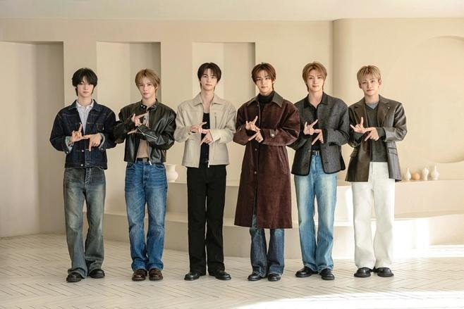
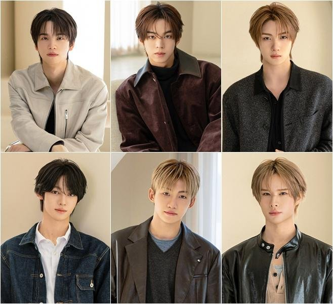
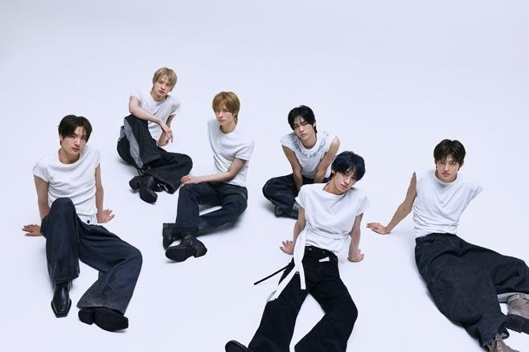

11월 2일 오후 6시, 투어스(TWS)가 싱글 2집 'TO US(투 어스)'를 발매해요. 설렘과 풋풋함을 노래해 온 팀인데, 이번에는 조금 다른 이야기를 꺼냈다고 해요.
📷 사진 1 자리
▲ 싱글 2집 'TO US'로 돌아오는 투어스 여섯 멤버 · 사진=플레디스 엔터테인먼트 제공
청춘의 고민까지 담은 '보이후드 팝'
투어스는 '보이후드 팝'이라는 이름으로 청춘의 설렘을 노래해 왔어요. 이번 싱글에서는 그 범위를 넓혀서 청춘의 고민과 시행착오까지 풀어냈대요. 한국일보 인터뷰에서 지훈은 "저희의 인터뷰를 기반으로 탄생한 앨범"이라고 소개했어요.
타이틀곡은 '내 이름을 불러줘'예요. 영재와 신유, 도훈이 작사에 참여했고 재즈 피아니스트 윤석철의 피아노 연주에 드럼 앤 베이스 리듬이 더해졌어요. 한국일보에 따르면 앨범에는 이 곡 말고도 '위 업(WE UP)'과 '헤비(heavy)'가 함께 실려요.
📷 사진 2 자리
▲ 신유, 도훈, 영재, 한진, 지훈, 경민의 개별 컷 · 사진=플레디스 엔터테인먼트 제공
이름을 불러주는 사람들
지훈은 스포츠서울 인터뷰에서 "우리는 누군가가 자신의 이름을 불러주는 것만으로도 힘을 얻을 수 있는 세상에 살고 있어요"라고 말했어요. 팬덤 42 덕분에 용기를 낼 수 있었고 그 용기를 같은 시대를 사는 청춘에게도 전하고 싶다는 이야기였어요.
가사를 쓰는 과정도 눈에 띄어요. 스포츠서울에 따르면 신유는 데뷔 후 처음 작사에 참여했고 도훈은 가사를 처음부터 끝까지 직접 써서 회사에 보냈다고 해요.
▶ 영상 1 자리
무대와 앞으로
무대는 곡의 감정선을 따라 가요. 경민은 한국일보 인터뷰에서 퍼포먼스가 처음에는 잔잔해 보이다가 뒤로 갈수록 점프와 턴 같은 동작이 더해진다고 귀띔했어요. 지훈은 스포츠서울에서 이번이 개인적으로 가장 어렵게 느낀 퍼포먼스라고도 했고요.
📷 사진 3 자리
▲ 흰 배경에서 함께한 투어스 여섯 멤버 · 사진=플레디스 엔터테인먼트 제공
투어스는 데뷔 3주년과 4년 차를 앞두고 있어요. 지훈은 "성장하고 싶은 욕심은 신인 때보다 더 강해졌다"고 밝혔어요. 지난 미니 5집으로 밀리언셀러를 기록하고 첫 아시아 투어도 마친 뒤라서 이번 싱글이 어떤 반응을 얻을지 궁금해지네요.


